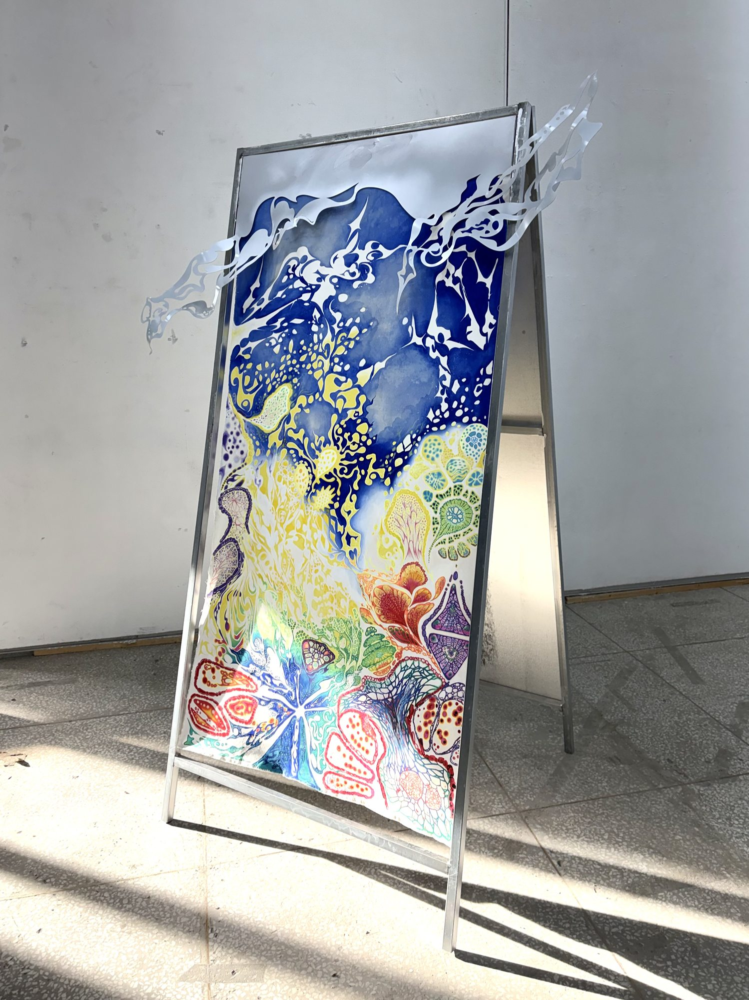

작은 것은 움직이고 큰 것은 고요하다.
- 연도Year
- 2025
- 재료Material
- 혼합 재료
- 크기Size
- 가변 설치Dimensions variable
- 시리즈Series
- 입체, 설치Sculpture & Installation
바닷속 규조류는 끊임없이 움직이며 미세 플라스틱의 이동과 확산에 영향을 미친다. 인류세라는 거대한 환경 담론은 이처럼 인간의 시야에서 벗어난 미시 세계의 움직임 위에서 형성된다. 작품은 도로 위 철제 입간판의 형식을 차용하여 이러한 미시 세계의 행보를 현실 공간으로 확대한다. 현미경 속에서 미학적 아름다움의 대상으로 소비되던 규조류는 현실에서는 미세 플라스틱을 우리의 생활권으로 운반하는 생태계의 일부이며 거대 담론에서 큰 영향력을 가진다. 그렇기에 입간판이라는 적극적인 형태를 통해 이 문제를 마주하게 하고 싶었다. 작품은 아름다움과 문제를 모두 지닌 규조류의 아이러니를 통해 아름다움과 위험, 미시와 거시가 분리된 개념이 아니라 하나의 생태적 연결망 안에서 공존하고 있음을 드러낸다.
Diatoms in the sea are constantly on the move, and they affect how microplastics travel and spread. The vast environmental discourse of the Anthropocene takes shape on top of such movements in a microscopic world beyond human sight. Borrowing the form of the steel A-frame signs that stand on the street, the work enlarges the doings of this microscopic world into real space. Diatoms, consumed under the microscope as objects of aesthetic beauty, are in reality part of an ecosystem that carries microplastics into the places where we live, and they wield great influence within this larger discourse. That is why I wanted the assertive form of a street sign to make people face this problem. Through the irony of the diatom, which carries both beauty and a problem, the work reveals that beauty and danger, the micro and the macro, are not separate ideas but coexist within a single ecological web.